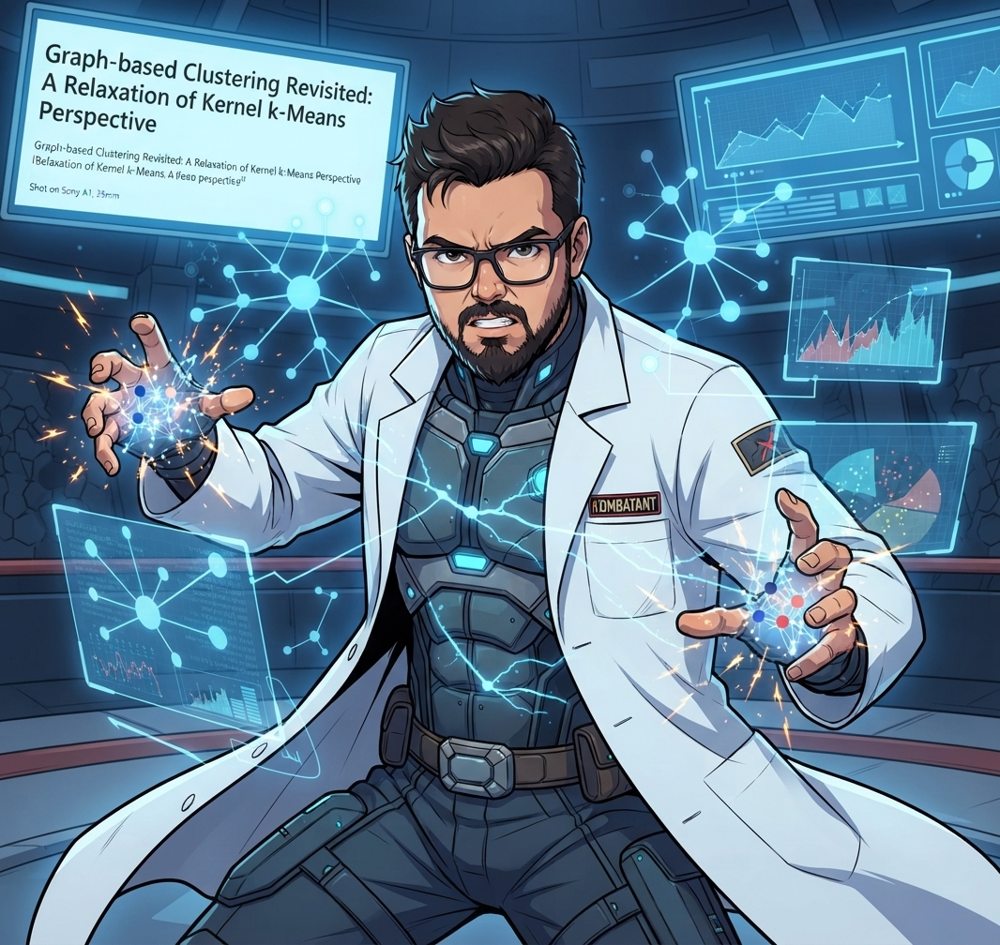

Último Post
Além das Fronteiras Lineares: Repensando o Clustering Baseado em Grafos através da Lente do Kernel k-Means
O Desafio de Agrupar o Caos: Por que os Algoritmos Tradicionais Falham? No mundo da Inteligência Artificial de 2026, onde lidamos com volumes de dados massivos e não estruturados, a...